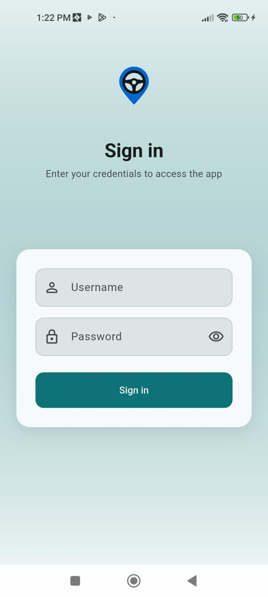

دليل للمستخدم النهائي مع أماكن جاهزة لإضافة لقطات شاشة. النسخة الإنجليزية: USER_GUIDE_EN.html
كيف تضيف الصور:
احفظ الصور في المجلد docs/screenshots/
وبنفس الأسماء المكتوب أسفل كل إطار (أو عدّل المسار في الملف لهذا الاسم).
قائمة مقترحة للأسماء موجودة في docs/screenshots/README.txt.
1) ما وظيفة التطبيق؟
يساعد التطبيق السائق أو المندوب على:
تسجيل الدخول بحسابه.
متابعة أوامر الخدمة اليومية.
بدء وإنهاء كل خدمة مع التحقق من قراءة العداد.
تشغيل التتبع وإرسال الموقع الحالي.
تعديل إعدادات التطبيق والتتبع.
2) أول تشغيل — تسجيل الدخول
تظهر شاشة تسجيل الدخول.
أدخل اسم المستخدم وكلمة المرور.
اضغط زر تسجيل الدخول.
بعد النجاح تنتقل تلقائياً إلى الشاشة الرئيسية.
التطبيق يحفظ الجلسة؛ غالباً لن تحتاج لإعادة الدخول في كل مرة إلا بعد تسجيل الخروج.

أضف لقطة شاشة هنا docs/screenshots/02-login.png
مثال: شاشة تسجيل الدخول.
3) الشاشة الرئيسية بعد الدخول
شريط علوي: ترحيب، اسم المستخدم، زر تسجيل الخروج.
شريط سفلي (3 تبويبات): الخدمات — التتبع — الإعدادات.